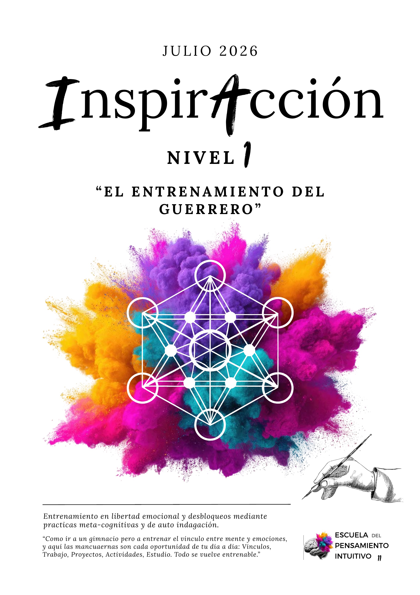
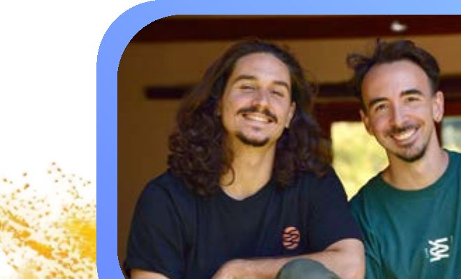
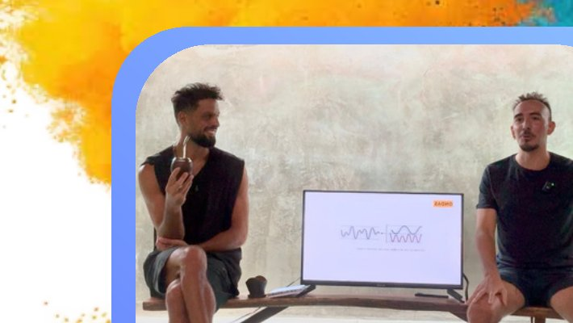
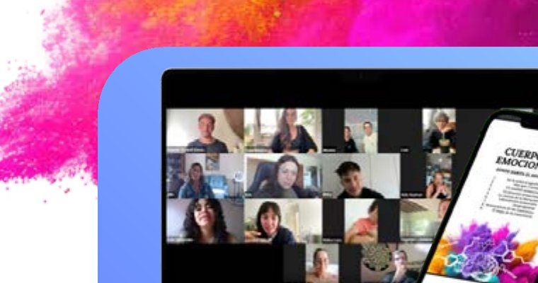
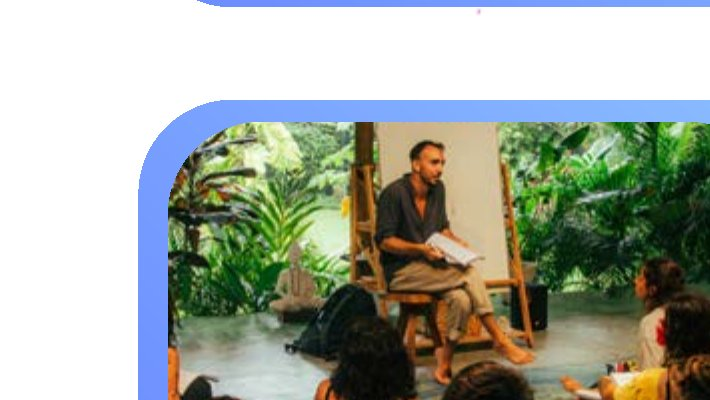

1
El problema de la psique
Mente de principiante
"El entrenamiento del guerrero"

"Como ir a un gimnasio pero a entrenar el vínculo entre mente y emociones, y aquí las mancuernas son cada oportunidad de tu día a día: Vínculos, Trabajo, Proyectos, Actividades, Estudio. Todo se vuelve entrenable."
Quiero inscribirmeVas a aprender a tomar decisiones claras, reducir el sufrimiento y el estrés, y activar los mecanismos creativos e intuitivos que están directamente asociados a los estados de abundancia.
Este programa es el puente entre la inspiración y la Acción. Un proceso de 3 meses diseñado para que detectes tus reacciones automáticas y las reemplaces por acciones intuitivas. Es un proceso sencillo, práctico y profundo de despertar de consciencia.
Lo vas a conseguir desarrollando habilidades creativas y resolutivas con prácticas fundamentadas en neurociencia, psicología y espiritualidad que te guiaré a aplicar en cada área de tu vida en el día a día.
Me gusta decir que este programa tiene el propósito de pasar de los problemas que te cansaste de tener a los problemas que siempre quisiste tener.
Por poner un ejemplo personal: pasé de tener problemas de deudas y escasez económica durante más de 15 años a los "problemas" actuales de tener que armar equipo y delegar tareas debido al crecimiento de la escuela y tener que formar a los primeros guías del método para sumar profesores y sesiones a los programas.
Otros casos que se ven en practicantes de este programa: mejorar sus vínculos, su trabajo, su economía, descubrir su propósito, actualizar hábitos, y recuperar el disfrute. Todo esto trabajando en el origen donde todo converge y donde todo se origina: tu sistema de percepción. El software con el que leés tu realidad.
Volvé a la abundancia de crear tu vida desde la autenticidad y la determinación de tu pensamiento intuitivo. Liberate de una vez de todos los condicionamientos espirituales de turno (técnicas, pasos, hábitos, prácticas).
Creador del Método Contra-Intuitivo
Fundador de la Escuela del Pensamiento Intuitivo y de Move Mentoring — Escuela de Movimiento junto con Martín López Grosman.
Mi camino comenzó gracias al colapso y una suerte contra-intuitiva. Tenía 22 años, venía de un año de ataques de pánico y acababa de quebrar nuestra empresa familiar (una fábrica de camisas creada por mi abuelo). Ya no podía pagar mi alquiler, no existían propiedades ni ahorros en mi familia, y se vivía un ambiente de angustia y frustración, desbordados de estrés por no ver la salida.
Ese era mi contexto el día en que comencé a experimentar una profunda experiencia de éxtasis que duró casi un año ininterrumpido (un estado interno de profunda paz, presencia y unidad).
A esta experiencia le siguieron unos cuatro años de ansiedad, depresión, miedos y síntomas en los que me dediqué a practicar y estudiar en profundidad sobre psicología, neurociencia, fisiología, terapias complementarias, yoga, meditación, exposición en hielo, ayunos, dietas y hábitos. Entonces comprendí algo fundamental: ni la información intelectual ni la física, ni las experiencias previas de iluminación te van a liberar de una programación de códigos contra-intuitivos.
Aprendí que, para tu mente, salir de su programa automático representa el peligro de muerte; por este motivo bloquea todas las posibilidades del verdadero cambio y las reemplaza por la idea de que existen cosas o prácticas externas a vos que pueden sanarte o liberarte.
Esta fue la experiencia que me impulsó a guiar a más personas a la libertad emocional mediante un programa al que llamé InspirAcción, que dejó como resultado dos manuales (Nivel 1 y 2) donde vi nacer el sistema al que hoy dedico mi vida: el Método Contra-Intuitivo.
Me formé con Enric Corbera y estudié Neurociencias con Nazareth Castellanos. También tuve la oportunidad de guiarme con mentores de negocios de un perfil espiritual como Laín García Calvo, Mariano Rodríguez y Sofía Contreras, gracias a los cuales creé Proyección, un programa de proyecto y abundancia.
Hoy, además de dirigir la Escuela del Pensamiento Intuitivo y Move Mentoring, soy profesor de Neurociencia y Psicología en la escuela Soma Yoga y continúo dando sesiones 1-1.
Mi propósito es acompañar a otros a desprogramar sus mecanismos limitantes para que vuelvan a elegir quiénes quieren ser, y recuerden la abundancia que llevan dentro y su reflejo inevitable en el mundo material.
Cada 15 días se desbloquea un nuevo módulo de prácticas y de estudio.
Mente de principiante
La escucha
La atención
Ordenar con la palabra
Cruzando umbrales
El estado de la experiencia
Se otorga al completar el proceso. Es requisito para realizar el Nivel 2 y/o la Formación.
Del tema actual aportando más detalles y ejemplos. De los entrenamientos: explicando cómo funcionan, por qué y para qué, y guías prácticas para realizarlos.
Organiza los conceptos de forma práctica, sencilla y aplicable en la vida cotidiana.
Abordamos consultas de casos reales de quienes quieran participar, revisamos procesos y resolvemos dudas. Se entrega la grabación dentro de las 48hs para ver en diferido.
Nuestro punto de encuentro diario. Aquí transcurren los desafíos semanales, exposición de ejemplos y envío de audios respondiendo dudas. No es condición usarlo, pero es recomendable por el valor que aporta.
Agendá tu sesión con Agus con un 40% de descuento durante toda la cursada del programa.

Regulación fisiológica del estrés mediante técnicas de respiración y las prácticas regenerativas.

Prácticas de meta-cognición y regulación de la coherencia cardíaca desde el Yoga.

Se entregan las métricas del progreso grupal realizadas en las 3 instancias claves de la cursada.

Sesiones extras con guías que realizaron el Nivel 1 y 2 de InspirAcción y luego se certificaron como guías en la formación presencial de la escuela.
En InspirAcción trabajamos con el Método Contra-Intuitivo. Uno de sus principios básicos es: "Transformar todo problema en un proyecto de crecimiento personal".
"Un rito cotidiano para liberar la expresión auténtica"
Con el tiempo acumulamos ideas, deseos y emociones sostenidos por el apego, el miedo y la culpa. Muchos pensamientos entran pero pocos se digieren; a menudo actuamos sin que exista un deseo auténtico ni plenitud.
Convertir esa tormenta de pensamientos y memorias caóticas en materia prima para tu intuición. Mediante una práctica de escritura matutina de 5 niveles, depurás la mente a la deriva para ordenar tus ideas.
El proceso calma las aguas y permite que salgan a la luz tus deseos, emociones y sueños auténticos que estaban abandonados.
"Un service a la antena de la intuición"
La ciencia explica cómo mejorar la salud y el bienestar, pero no suele explicar para qué necesitamos esa salud. Sin un propósito claro, incluso los practicantes más constantes se desmotivan.
Técnicas de respiración y meditación para regular tu coherencia cardíaca (comunicación armoniosa entre corazón, cerebro y sistema nervioso). Aprenderás a medir y comprobar por tu cuenta cuándo entrás en coherencia.
No buscamos solo relajación sino sintonizar con tu creatividad y originalidad. La paz y la salud son consecuencias de esta sintonía. La verdadera meditación comienza al abrir los ojos.
"Actualizando el sistema de creencias"
Saber no es sinónimo de ser consciente. Solemos usar frases como "ya sé lo que me pasa" para postergar decisiones difíciles. Este "darse cuenta" constante, pero vacío de acción, es un recurso del ego.
Responderás preguntas estructuradas para desafiar tus creencias base. Detectarás incoherencias y limitaciones que creías verdades. Es una lucha de igual a igual contra uno mismo para dejar caer viejas identidades.
Una actualización del sistema. Liberarás creencias que ya no cuadran con tu nueva versión y detectarás las historias que te contabas para evitar avanzar. Los nuevos pensamientos se "descargan" solos al liberar espacio.
"La psicología del futuro tiene que ser más cercana, humana y expansiva"
La psicología no debería ser tan solemne y distante. El problema común es la idea de que estamos separados en un mundo escaso, donde solo podemos ser víctimas o victimarios para validar nuestro sufrimiento.
Este espacio es comunidad y unión. En las sesiones grupales todos somos un espejo. Al compartir casos personales, las creencias limitantes se disuelven para todos por igual en un entorno libre de juicios.
Una desprogramación grupal que aporta inspiración y renovación emocional. Vas a ver cómo la evolución de otros te cambia en tiempo real y tendrás la oportunidad de ser el ejemplo e inspirar a otros.
Cada uno de los siguientes temas establece las bases sobre las que fueron creados los entrenamientos: Neurociencia, Psicología, Fisiología, Metafísica, Filosofía y Espiritualidad.
No es un requisito pero por la experiencia es recomendable, ya que abordamos cuestiones prácticas de la vida cotidiana y se mantiene un nivel profesional y cálido a la vez.
Las sesiones en vivo quedan grabadas y se entregan dentro de las 48hs posteriores. Cualquier consulta o intervención la podés dejar en el grupo de WhatsApp, que funciona como extensión de las sesiones en vivo.
El programa viene demostrando una igualdad de efectividad en todos los casos. Al trabajar con casos de la vida cotidiana es difícil determinar cuánto tiempo lleva el programa, ya que vas a aprender a usar todas las áreas de tu vida como entrenamiento.
Si hablamos en términos de lectura, escritura, prácticas complementarias y sesiones, calculamos un mínimo de entre 2 y 6 horas semanales. (Pensalo como un gimnasio, porque funciona exactamente igual.)
Para obtener la certificación deberás completar el programa y dos formularios de evaluación que van a medir tus niveles de evolución en áreas de tu vida, dejando evidencia de los cambios relativos (emocional y mental) y objetivos (sucesos, salud, finanzas, acciones, hábitos, vínculos, etc.).
Al ser un programa de entrenamiento el único requisito es entrenar y ver los resultados suceder. La evidencia definitiva es tu vida.
Por resonancia. Por lo general la mayoría de las personas que ingresan al programa ya escucharon todos los podcast o vieron las clases de YouTube, por lo tanto ingresan por intuición. Si estás buscando un curso más, no es este tu lugar. Esto no es para saber más de un tema, es para ser el cambio.
Pensalo como una combinación entre un programa de educación en libertad emocional (el que no tuvimos en la escuela) y una sesión de 3 meses de entrenamiento en neuro-psico-espiritualidad grupal guiada por un entrenador. El nivel de impacto es total.
Para responder esto prefiero dejarlos con los testimonios de las personas que ya pasaron por el programa.
De la última generación
Para realizar este entrenamiento muchos de ustedes invirtieron la energía que apenas tenían, el tiempo que les faltaba y el dinero de sus ahorros o que pidieron prestado. Si es tu caso, siendo completamente honesto/a con vos: ¿considerás que lo valió?
¿Qué le dirías a alguien que está en la misma situación en la que estabas antes de tomar la decisión?
Sí, vale la pena, vale la pena el esfuerzo, el dinero y la energía. Es agradecimiento y movilizante, por momentos dan ganas de huir pero creo que es necesario para poder hacer el proceso.
Me parece muy valiosa la formación, te abre puertas hacia tu interior, te abre a nuevos puntos de vista y eso lo convierte en una herramienta que te ayuda a sanar.
Considero que sí, valió y más. Me agradezco por haber dicho sí en ese momento en el que mi cuenta bancaria no daba fe de que podamos pagarlo. Me agradezco haber saltado porque lo que siento que me llevo es realmente invaluable. Le diría que en este mundo, dónde casi todo invita a mirar afuera, este programa donde encontrás herramientas súper amorosas y prácticas para conocerte más, mejor, hacerte cargo de tu vida y sobre todo sufrir menos es para todo aquel que quiera cambios reales en su existencia. Que no hay forma de arrepentirse.
Hacerse responsable de uno mismo también tiene que ver con explorar los lugares más ocultos que a veces ni sabemos que los tenemos, pero el grupo y la comunidad acompaña de forma amorosa y cada uno va a su tiempo, no hay prisa.
Sí, totalmente. Este curso valió y seguirá valiendo mucho toda mi vida. El cambio interno y las nuevas perspectivas en constante entrenamiento son parte de mi cotidiano.
Les diría que si tienen la oportunidad, no lo dejen pasar y que las razones que los detienen de tomarlo son las siguientes:
Simplemente confíen porque es exactamente cuando más es necesario y cuando más notarán la diferencia.
Sí, lo valió. Y creo recién comienza...
Le diría que hay decisiones en la vida que dependen de esa voluntad y de esa escucha interna que no vale a quedarnos en cada apoyo en la almohada, en cada momento en el indoloro, en cada minuto al azar.
Y que si esa voluntad y escucha están en duda o sufrimiento, necesitan sólo una decisión, sólo una, sólo un momento de inconsciencia para entrenar y transformar este Ser que nos acompaña con quien tenemos la inevitable conveniencia de cerrar la relación más honesta del mundo: experimentá InspirAcción.
Primero y más importante que es una inversión para tu salud mental. Partiendo de esa base, invertir en uno mismo es lo más auténtico y placentero que hacés. Le diría que se anime a programar cosas, le diría que se atreva a un despertar diferente, a entrenar la cabeza para que pueda mejorar día a día y no preocuparse porque cosas que solo ocupan lugar al ego al inicio se vacían en su contento y ahora.
Sí valió totalmente, le diría que es por acá, que lo haga aún sin saber cómo pagarlo, el dinero aparece una vez que tomes la decisión de hacerlo. Todo se alinea y se activan los medios de la forma menos pensada.
Siento que es una inversión que vale la pena si es que sentís que querés pasar por la experiencia.
Que lo haga. Que haga lo posible porque vale cada peso que invertí en mí y en mi crecimiento personal con este programa.
Que lo hagan, porque a mí me ayuda a pensar y a tratar de no estar tan cerrada.
Vengo gastando mucha plata en formaciones pero esta es la más significativa. La que me dio las herramientas y me ayudó a ver que no soy el único loco que cree en todo esto. Ya que desde chico vengo pasando por varias filosofías a través del entrenamiento y los deportes de combate. Marca todo lo que simplifica y me da poder de crearlo.
Lo entendí todo. Ahora es cuestión de seguir aplicando y disfrutando, que era la parte que no estaba haciendo. ¡Gracias!
Realmente sí. Es de muchísimo valor todo el proceso. Reconozco mis debilidades, mis resistencias, de algún modo mi falta de compromiso para conmigo. Me costó mucho sostener los días que me había pactado leer y entrenar, aún así es un camino y un viaje.
Depende dónde nace esta decisión y tu capacidad de inspirarte, poner foco, voluntad, hacer el trabajo y por qué no abandonarlo para sentir. Creo que el único requisito es saber foco, algo más grande que una situación de motiva, que tenés curiosidad, algo te impulsa y deseás saber lo que está dentro de ti.
Si te resuena, dale. Es por ahí.
Sí lo súper valió, lo dudé, pero en cuanto comenzó supe que estaba en el camino correcto y estoy muy feliz con todo el conocimiento aprendido y sobre todo la energía del grupo y todo lo leído. Sobre todo lo valió porque fue muy desafiante y siento que lo pasé por el cuerpo y ahora tengo otra creencia sobre quién soy y lo que puedo hacer y cómo ver situaciones y conflictos.
Lo valió. Porque la información queda para siempre. Que sí la está sintiendo, que la haga. Que la haga como sea, pero que la haga.
No lo pienses. Es un antes y después la manera de ver y sentir la vida.
Sí. Para mí fue un entrenamiento 100% recomendable. Me quedo con un montón de herramientas que incluso hoy llevo a mis prácticas, a mis alumnos. Feliz de haber llegado a vos, Agus, y feliz de poder estar en Pipe en dos semanas. Solo agradecimiento por todo lo que enseñás, por tu forma de transmitir, por tu mirada.
Es un autorregalo maravilloso. Que lo vale, pero hay que hacerlo con actitud comprometida. Es una inversión.
Sí, considero que lo valió completamente, y ya hace tiempo lo recomiendo. Me encuentro a veces falta de palabras o explicaciones, porque no quiero que suene a un curso más, a un chantaje como se lo asocia a veces a lo relacionado a la "autoayuda". Y quiero dar a entender el gran valor que tiene, que es realmente la no ver víctima de la vida si no recordar que la decidimos, vivirla. Lo que suelo hacer es invitarlos a escuchar los podcast, y que se vayan a entrenarse.
Siento que sí. A pesar de que ahora mismo no logro del todo mis estándares de ingresos y laborales, siento que lo sutil ya está despierto en mí y que voy proyectándolo en lo nuevo, comienzo de a poco. Al claro, lo recomiendo siempre, es fantástico, es fácil, accesible. Un paso hacia desmitificar nuestros propios límites, por ahí decirlo.
28 respuestas · Última generación certificada del Nivel 1
28 respuestas
28 respuestas
28 respuestas
28 respuestas
28 respuestas · Escala 1 al 5
28 respuestas
Plazas limitadas. Próxima edición: Julio 2026.
Quiero hablar con Agustín